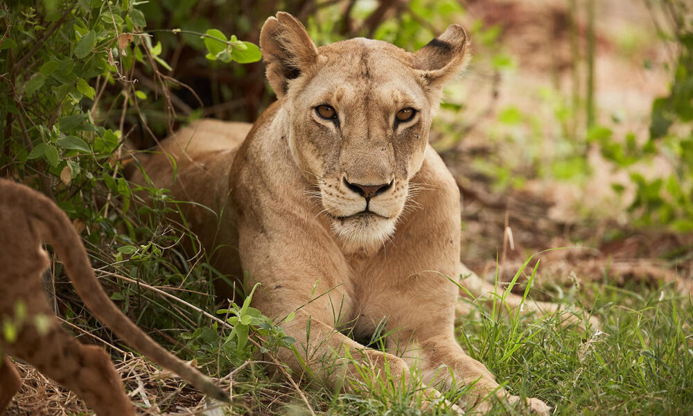

FemailLion:
Lionesses are the largest female felines in the world. They usually weigh around 150 to 200 kg and reach up to 2 meters in length. Lionesses have a muscular and strong body that allows them to hunt large game such as zebras, giraffes and even elephants.
Female lions play an important role in lion society. They are responsible for hunting, caring for cubs and protecting the herd. Female lions usually live in herds of 10 to 40Here are some interesting facts about female lions:
Lionesses are the only felines that work together to hunt.
Female lions can live up to 20 years.
Female lions usually give birth once every two years and usually give birth to 2 to 4 cubs.